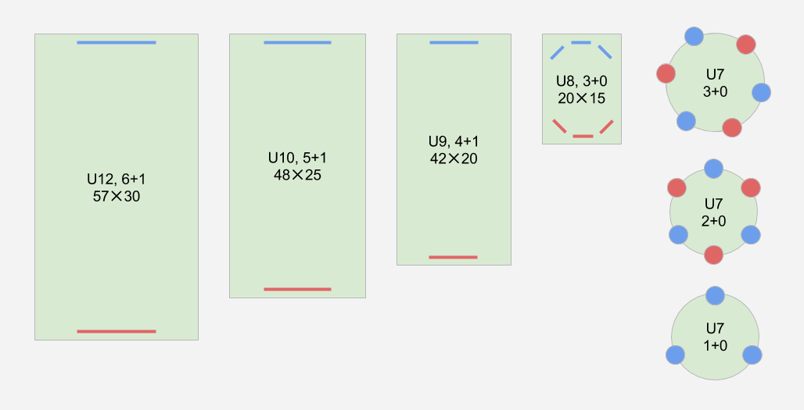

Všechny zájemce srdečně zveme na 4. mezinárodní fotbalový turnaj mládeže pro kategorie U7, U8, U9, U10 a U12, který proběhne 14–15. června 2014 v Boskovicích. Hlavní motivace turnaje zůstává i ve čtvrtém ročníků stejná: vytvářet postupnými kroky prostředí, ve kterém by hráči, trenéři, rodiče, funkcionáři i fotbaloví fanoušci mohli chápat fotbal v širších souvislostech.
Pravidla turnaje vychází z oficiálních pravidel fotbalu malých forem, která si můžete stáhnout na webu Fotbalové asociace ČR. Stručné shrnutí pro U12: ofsajdové postavení ve vápně, míč od brankáře za půlící čáru jen ze hry; U10/U9: bez ofsajdu, malá domů není povolena, míč od brankáře může na soupeřovu polovinu po doteku hráče nebo s prvním dopadem na vlastní polovině.
Každá kategorie má své hřiště, které tvarově i rozměrově odpovídá dovednostní úrovni hráčů. Během dvoudenního turnaje poměří týmy své dovednosti vyváženě, hraje každý s každým. Základní parametry:
| U7 | U8 | U9 | U10 | U12 | |
|---|---|---|---|---|---|
| počet hráčů | 3+0, 2+0, 1+0 | 3+0 | 4+1 | 5+1 | 6+1 |
| hřiště | kruhové, viz níže | obdélníkové, tři branky na každé straně | klasické obdélníkové, jedna branka na každé straně | ||
| rozhodčí | není, výsledek podle dohody trenérů | ano | |||
| hrací čas | 18 minut | 20 minut | |||
| systém hodnocení | body, vstřelené branky i přístup trenérů | ||||
| počet družstev | 12 | ||||
V kategorii U7 se hraje na kruhovém hřišti s několika brankami po obvodu. Hrát se bude ve variantách tři na tři (každý tým má po obvodu tři barevně odlišené branky), dva na dva (totéž, ale na menším hřišti) a jeden na jednoho (nejmenší hřiště, po obvodu celkem tři barevně nerozlišené branky). Pro lepší představu zveřejníme v dohledné době video, na kterém budou herní varianty pro kategorie U7 a U8 názorně vidět.
Pokud se chcete turnaje zúčastnit, vyplňte prosím závaznou přihlášku a pošlete nám e-mailem soupisku hráčů se jmény a ročníky narození. Kapacita turnaje je omezená, do každé věkové kategorie bude přijato nejvýš 12 týmů. Rozhoduje čas podání přihlášky, v opodstatněných případech si vyhrazujeme právo udělit výjimku. Uzávěrka přihlášek je na konci února 2014.
V kategoriích U9–U12 je turnaj dvoudenní, startovné dělá 3000 Kč. Zápasy v kategoriích U7 a U8 se odehrají za den, ale bude se hrát v sobotu i v neděli, takže si můžete vybrat, jestli chcete přijet jen na jeden den (1500 Kč), nebo jestli přespíte a zůstanete na oba dny (3000 Kč). Startovné zahrnuje vstupné na koupaliště, pitný režim a zvýhodněnou cenu za stravování.
Maximální počet hráčů je 12 v kategoriích U7–U10 a 15 v kategorii U12, k tomu počítáme se dvěma členy realizačního týmu. Kdyby vás mělo být víc, ozvěte se prosím předem, nějak se domluvíme. Výběr jídla a ubytování se objeví později. Pokud máte nějaké zvláštní požadavky na stravování (bezlepková dieta, alergie), dejte včas vědět.
Další informace budeme průběžně přidávat, sledujte web.
Případné dotazy vám rád zodpoví ředitel turnaje Aleš Odehnal.